Black & Decker's follow-up to the Workmate WM325 was the WM525, which went on sale in November 1973. The Guardian newspaper explained the situation thusly in their May 15, 1974 issue under the headline "SON OF WORKMATE": "So successful is Black and Decker's Workmate (portable workbench-cum-vice) that they have produced a lighter and slightly cheaper model for the home carpenter making shelves, furniture, and garden benches. The WM 525 Standard Workmate is dual-height, has a tubular steel frame, and a new safety catch design."
The Guardian had no idea how significant the final five words were. Probably the most important feature of the WM525 is the revised left and right steel upper-frame pieces with a new latching mechanism. The latch is held in place with a coil spring keeping the Workmate latched upright until the user pulls the lever to release it. Aluminum riser blocks sit on top of the steel frame to bolt the jaws down. This basic upper-frame design next appeared in slightly revised form on the final Type of the UK model WM325, and the original North American model 79-001 Type 1. The design has since been used for all subsequent dual-height Workmates. There have been further changes to the mechanism as the Workmate evolved, but they all build on this design.
As also mentioned in The Guardian, the WM525 has a frame entirely of steel rather than aluminum, the pieces of which are painted blue. This was Black & Decker's first move away from the all-aluminum construction of the original Workmate. The steel frame is supported on the same cast aluminum fold-out legs used on the front of the WM325. For the rear, those same legs are turned 90 degrees to open toward the back rather than the sides. The knobs for the vise handles are the same blue used on the WM325.
The appearance of the WM525 is quite distinctive because it is the only dual-height Workmate that does not employ H-frames in its construction. Instead, the WM525 uses what might be called N-frames (see the opening photo).
The vise jaws are 13-ply 11/16" plywood, with a double layer along the edge where the jaws meet. This is the only Workmate where the bottom layer is partially cut away in one spot. This is necessary to clear the top of the rear N-frame when the Workmate is upright. (I can just imagine them designing and manufacturing the entire frame without the jaws mounted, and then having an "Oh crap!" moment when they found out it would hit the bottom of the jaw.) The ten dog holes in the wooden jaws are lined with steel sleeves like those of the WM325.
Unlike all other dual-height Workmates, the WM525 has only a single spring catch to hold it in the folded position. Instead of being a part of the upper frame brackets, this is mounted near the bottom of the left upright of the front N-frame, and it clips to the upper part of the left upright of the rear N-frame.
The feet for sawhorse height are a new, simpler style consisting of a short metal rod with a press-on rubber foot that slips over it. Like the earlier push-in feet on the WM325, these rubber feet are often missing, in which case the Workmate rests on the projecting metal rods.
Rounding out the unique features, the WM525 has two extra feet projecting horizontally from the back of the lower frame assembly. When the WM525 is folded and then stood on end, these feet become vertical and, along with the lower ends of the rear N-frame, help support it.
I have tentatively identified six different Types of the WM525 and I try to explain the differences between them in the individual sections that follow.
It is not uncommon to find UK Workmates of this period with certain parts that are not standard for their Type. This is in contrast with the U.S. Workmates which were much more consistent within each Type.
The WM525 was sold from November 1973 to 1976, based on what I have found in Argos catalogs of the period as well as newspaper ads and articles.
Black & Decker Workmate WM525
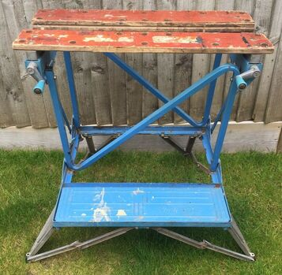
The WM525 Type 4WM525 Type 1
The WM525 debuted as a Type 1 with a wooden footrest like the WM325 Type 1, but with "Black & Decker Workmate" emblazoned on it. The extra feet projecting from the back have round rubber pads similar to the other eight feet.

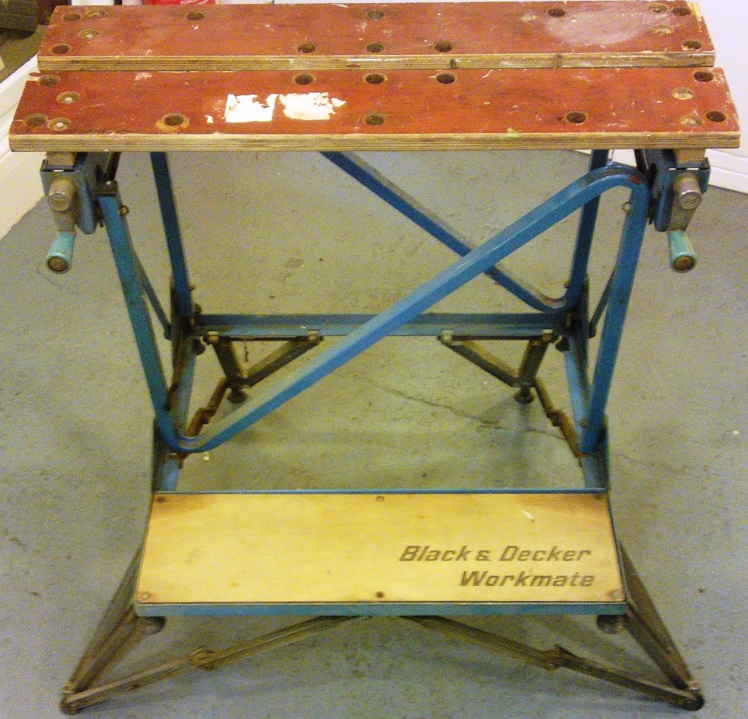
Note the backward-N-frame, cast-aluminum legs, and wooden footrest

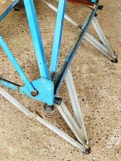
Extra feet projecting from the back of the lower frame

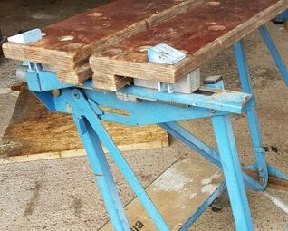
The WM525 introduced the upper frame and latch assembly that would be used on all future Workmates
WM525 Type 2
The first change made to the WM525 was to replace the wooden footrest of the Type 1 with one of blue-painted steel. It has multiple intersecting ribs and "Black & Decker Workmate" in raised lettering. About the same time, they eliminated the rear-projecting rubber feet, replacing them with simple steel stubs with a black plastic cap that often is missing. I'm tentatively calling this the Type 2, although I have never seen one marked as a Type 2.

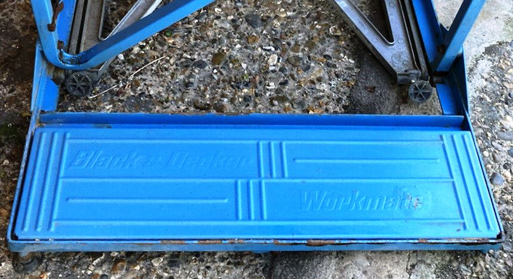
Now with a steel footrest

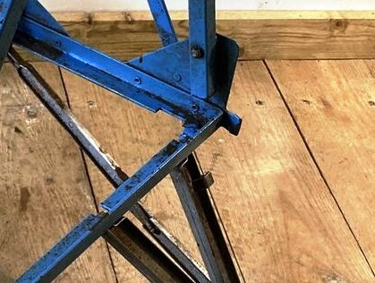
Just a steel stub where the rear-projecting foot was
WM525 Type XA
I'm not sure why Black & Decker switched from numbers to letters when they named the Type XA, and I'm also not completely sure where it belongs in the sequence of Types. It seems to match what I'm calling the Type 2 except that the top-release levers are bare steel, no longer painted blue.

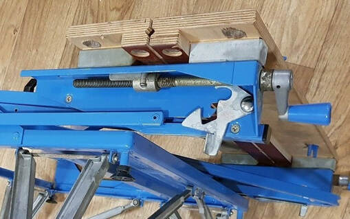
Top-release levers are unpainted steel

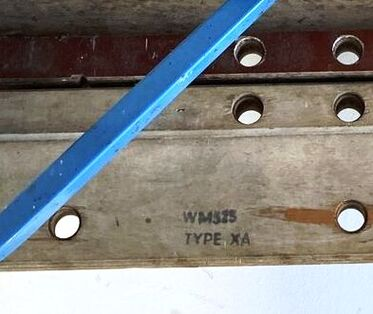
Stamped on the bottom of the jaws.
WM525 Type 4
The Type 4 (also shown in the top photo on the page) appears to be nearly identical to the Type XA. It's not apparent that any specific feature or component is different between the two.

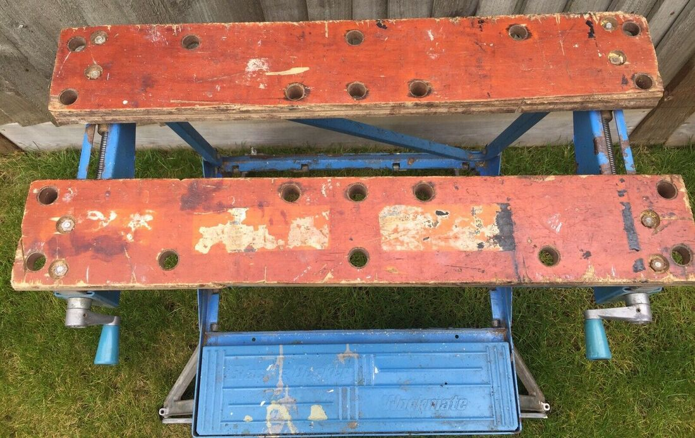
Note the steel sleeves in the jaws

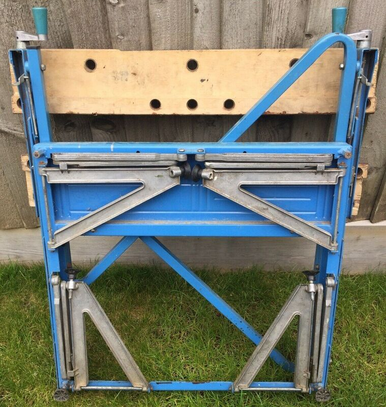
The front and rear legs are the same, turned 90 degrees

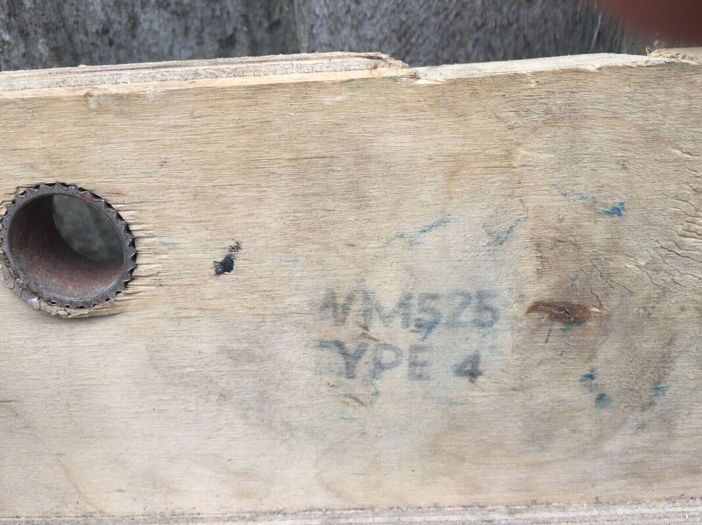
Stamped on the bottom of the jaws
WM525 Type 5
The main change on the Type 5 was the replacement of the cast aluminum legs with painted ones of stamped steel. The way the legs fold is the same, but their shape is different, with raised ribs along the center. The struts on the steel legs no longer have coil springs to help them unfold. The more expensive WM325 replaced its cast aluminum legs with ones nearly identical to these between the Type 3 and Type 4, so I would presume that these changes happened at the same time.

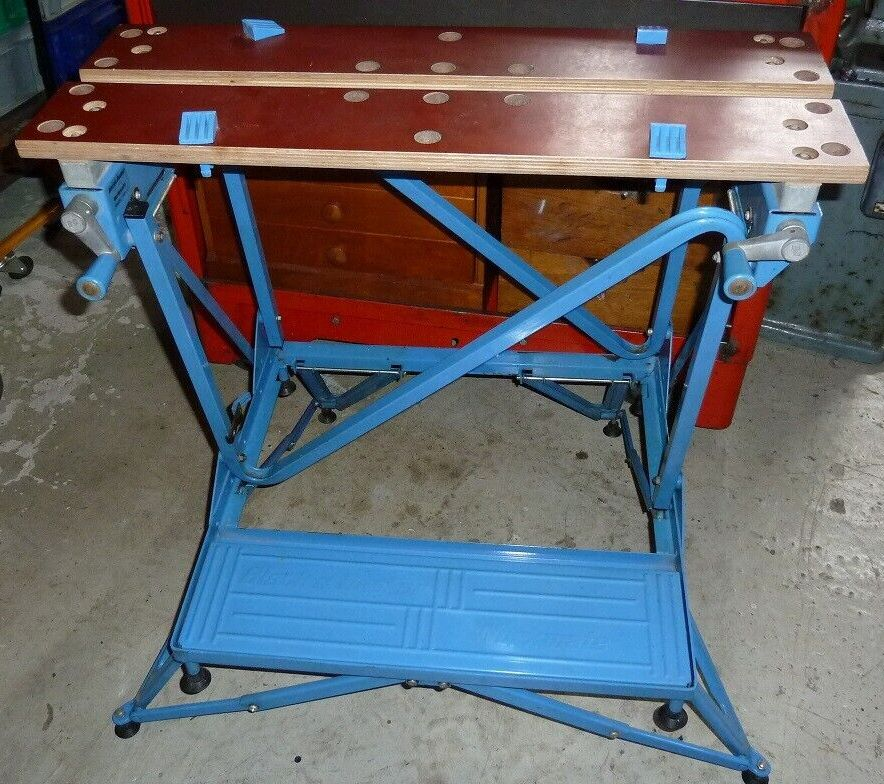
Now with painted steel legs instead of aluminum

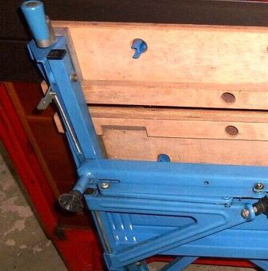
Note the rectangular cutaway in the bottom layer of the jaw so that it can clear the top of the N-frame

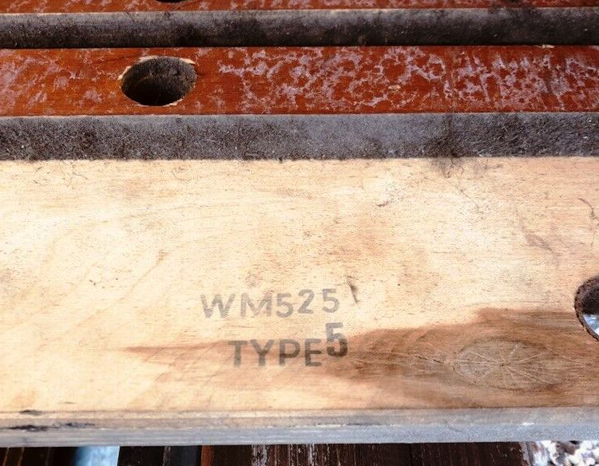
Stamped on the bottom of the jaws
WM525 Type 6
The only apparent change on the Type 6 was the replacement of the blue knobs on the vise handles with black ones.

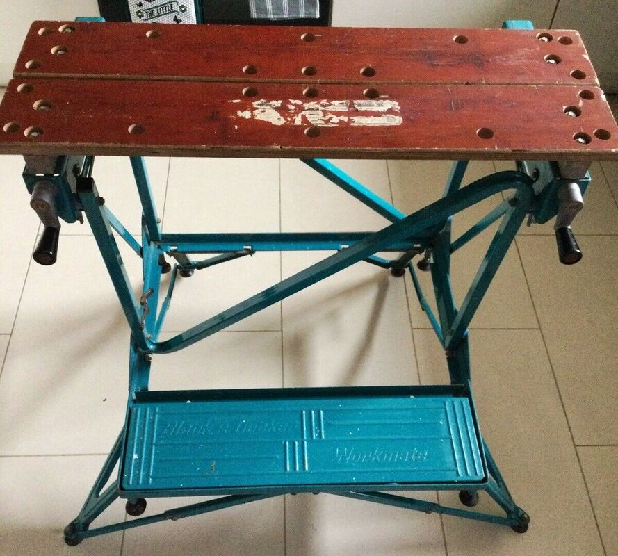
Switch to black knobs


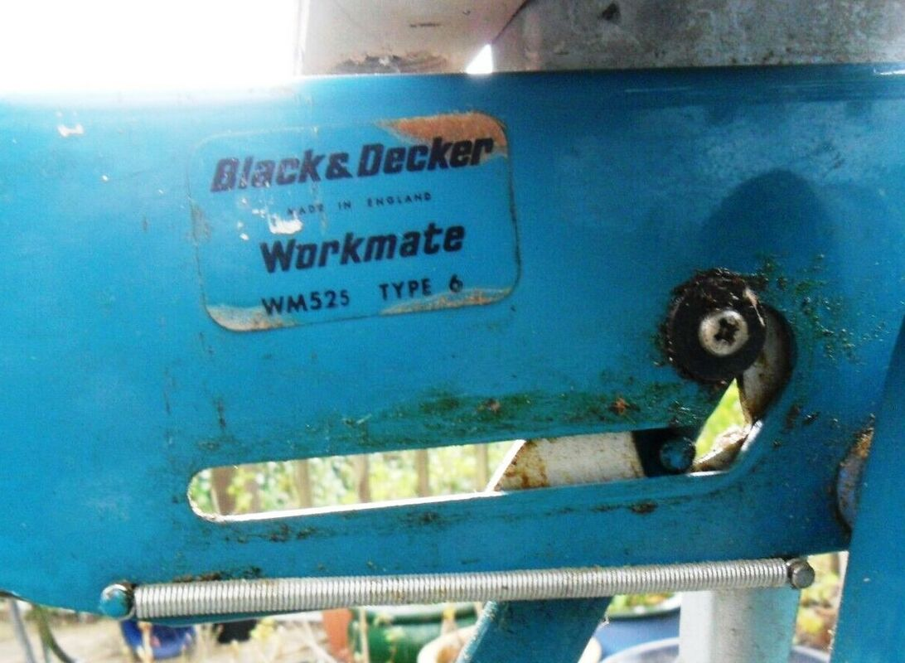
The Type number on a label. Also a good view of the coil spring.